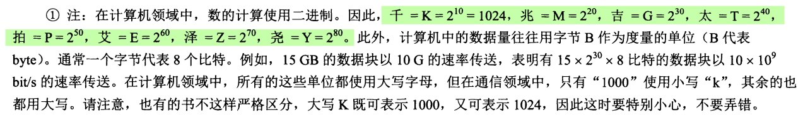
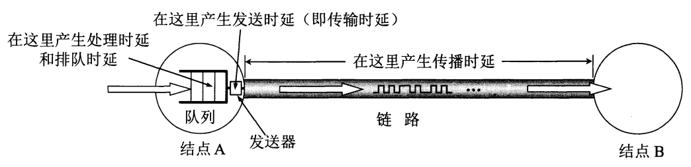
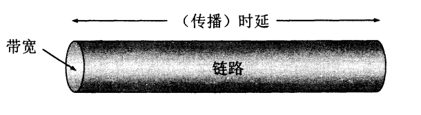
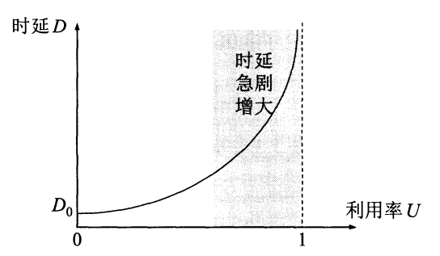

Network
Table of Contents
- 1. 计算机网络的基本概念
- 1.1. 什么是网络？
- 1.2. 为什么需要计算机网络？
- 1.3. 网络的组成
- 1.4. 什么是上网？
- 1.5. 多层次的ISP互联网是如何进行通信的？
- 1.6. 互联网协会的结构
- 1.7. 什么是计算机之间的通信？
- 1.8. 计算机网络的定义
1 计算机网络的基本概念
1.1 什么是网络？
网络是由若干节点和连接这些节点的链路构成，表示诸多对象及其相互联系。
在电的系统中，由若干元件组成的用来使电信号按一定要求传输的电路或这种电路的部分， 叫网络
—— 电学《现代汉语词典》（1993年版）
1.2 为什么需要计算机网络？
需要网络的因素之一是需要 资源共享 ，资源共享的前提是能够在无论何地都能够进行通 信( 如何连通计算机 )。
由此，网络具有两个属性： 1. 连通性； 2. 共享
1.2.1 一般会共享哪些资源？
1.2.2 网络的连通性
1.3 网络的组成
把计算机连接在一起的，并且能够实现资源共享的叫做网络。将多个网络连接在一起的叫做 互连网。
最基本的网络由结点和链路组成，但是由于网络逐渐庞大，因此网络从原本的单一网络结构演变成今日的多层级网络结构ISP。
1.3.1 结点
网络的结点就是各种计算机，有些是主机，有些则是用于网络传输的特殊计算机（比如路由器）。
1.3.2 链路
链路用于将各种各样的计算机连接起来，确保计算机之间的连通。
1.3.3 网络与互连网
网络将计算机相互连接起来，而互连网则是将网络相互连接起来。
1.3.4 互连网与互联网
1.3.5 核心部分与边缘部分
一般而言，网络可以分为两部分： 核心部分 和 边缘部分 。
互连网的核心部分由多个网络组成，主要实现如何连通计算机即如何能够正确而快速的传输 数据。而边缘部分由主机（位于边缘部分的计算机）组成，主机主要进行资源的共享；因此 主机主要解决如何实现计算机之间的通信。
1.3.6 数据交换的方式
1.3.6.1 电路交换
电路交换是一种面向连接的数据交换方式，多个计算机通过交换机相连进行数据交换，它具有如下阶段：
建立连接——数据传输——释放连接
在建立连接阶段，交换机会为两个正在通信的计算机建立一个专门的物理链路；而实际的场景中，只有计算机到交换机这段路程是专门的物理链路，而交换机内部则是拥有大量共享的中继线，正在通信的计算机则是占用着中继线里的一个话路。
数据传输阶段，通信双方会始终占用被分配的物理链路。
1.3.6.2 分组交换
1.3.6.3 交换
交换就是一种动态分配线路资源的技术。
1.4 什么是上网？
上网则是通过某个ISP分配的IP地址接入互联网。IP地址并不会零售，而是通过向审查合格的ISP进行批量出售。
1.5 多层次的ISP互联网是如何进行通信的？
信息从边缘主机一直向主干ISP前进，主干ISP又向边缘主机发送信息。
1.5.1 什么是IXP?
IXP就是互联网交换点。
在整个ISP系统中，两个网络之间进行通信都需要经过第三个网络，而IXP的作用就是使得两个网络能够直接进行通信而不必经过第三个。
1.6 互联网协会的结构
1.6.1 RFC的含义？
1.6.2 互联网正式标准的建立阶段
1.7 什么是计算机之间的通信？
计算机之间的通信就是运行在计算机上的进程之间的通信。
1.7.1 计算机的通信方式？
1.7.1.1 客户/服务器方式(C/S)
一台计算机作为服务提供商，另一台作为服务请求商。
1.7.1.2 对等方式(P2P)
两个计算机均可作为对方的服务器或客户端。
1.8 计算机网络的定义
计算机网络主要是由一些通用的、可编程的硬件互连而成的，而这些硬件并非专门用来实现 某一特定目的。这些可编程的硬件能够用来传送多种不同类型的数据，并能支持广泛的和日 益增长的应用。
- 计算机网络除了一般的计算机还支持其他设备(比如移动设备)
- 计算机网络除了传输数据还有多种其他用途
1.8.1 具备什么结构才能被称为“可编程的硬件”?
包含中央处理机的硬件设备(CPU)
1.8.2 计算机网络的种类
1.8.2.1 按照地域分类
- 广域网
- 城域网
- 局域网
- 个人区域网
1.8.2.2 按照使用者分类
- 公用网
- 专用网
1.8.2.3 接入网络(AN)
接入网(Access Network)从某个用户端系统到互联网的第一个路由器之间的一种网络.
从作用看,接入网的目的是作为“桥梁”让用户能够访问到互联网.
1.8.3 计算机网络的性能指标
1.8.3.1 速率
速率的单位是bit/s（比特每秒）（或b/s，有时也写为bps，即bit per second）。当数据 率较高时,就常常在bit/s的前面加上一个字母。例如, \(k(kilo)=10^3=千,\ \ M(Mega) =10^6=兆,\ \ G(Giga)=10^9=吉,\ \ T(Tera)=10^{ 12 }=太,\ \ P(Peta)=10^{15} =拍,\ \ E(Exa)=10^{ 18 }=艾,\ \ Z(Zetta)=10^{ 21 }=泽,\ \ Y(Yotta)=10^{ 24 }=尧(9)\) 。 这样, \(4×1010bit/s\) 的数据率就记为 \(40Gbit/s\) 。
1.8.3.1.1 比特速率(bit/s)与字节速率(byte/s)的转换
\[ 1字节=8比特 → byte/s \times 8 \stackrel{以bit/s为单位}{\longrightarrow} bit/s \\ bit/s \div 8 \stackrel{以byte/s为单位}{\longrightarrow} byte/s \]
1MB=1024KB1KB=1024Byte1 Byte = 8 bit1 Mb（Mbit） = 0.125 MB（MByte） 这里B的大小写不同单位也不太，我已经标注了2mbps=0.25MB/s=256kB/s
因为 1MBit1MByte=18⇒1Mbps=0.125×1MB=0.125MB
1.8.3.1.2 比特速率的换算

1.8.3.2 带宽
带宽具有两种含义:
① 信号的频带宽度;(单位赫兹 Hz )
② 某通道所能通过的最大数据量(即某通道的最高数据率.)(单位比特每秒 bit/s )
1.8.3.3 吞吐量
吞吐量:某时刻,某通道实际通过的数据率.
1.8.3.4 时延
总时延
数据传播过程中产生时延的几个位置 
1.8.3.4.1 发送时延
发送时延（transmission delay）是主机或路由器发送数据帧所需要的时间，也就是从发送 数据帧的第一个比特算起，到该帧的最后一个比特发送完毕所需的时间。因此发送时延也叫 做传输时延（我们尽量不采用 传输时延 这个名词，因为它很容易和下面要讲到的 传播 时延 弄混）。
发送时延与数据率和发送速率(带宽)的关系
1.8.3.4.2 传播时延
传播时延（propagation delay）是电磁波在信道中传播一定的距离需要花费的时间。
传播时延与信道长度,传播速率的关系
传播速率与介质有关,相同的介质其传播速率一样.
- 电磁波在自由空间的传播速率是光速，即 \(3.0×105km/s\)
- 铜线电缆中的传播速率约为 \(2.3×105km/s\)
- 在光纤中的传播速率约为 \(2.0×105km/s\)
1.8.3.4.3 处理时延
主机或路由器在收到分组时要花费一定的时间进行处理，例如分析分组的首部、从分组中提 取数据部分、进行差错检验或查找适当的路由等，这就产生了处理时延。
1.8.3.4.4 排队时延
分组在经过网络传输时，要经过许多路由器。但分组在进入路由器后要先在输入队列中排队 等待处理。在路由器确定了转发接口后，还要在输出队列中排队等待转发。这就产生了排队 时延。
1.8.3.5 时延带宽积
把传播时延和带宽——相乘，就得到另一个很有用的度量：传播时延带宽积. \[ 时延带宽积 = 传播时延\times 带宽 \]

这是一个代表链路的圆柱形管道，管道的长度是链路的传播时延（请注意，现在以时间作为 单位来表示链路长度），而管道的截面积是链路的带宽。 因此时延带宽积就表示这个管道 的体积，表示这样的链路可容纳多少个比特 。
设某段链路的传播时延为 \(20ms\) ，带宽为 \(10Mbit/s\) 。算出
\(时延带宽积＝20×10–3×10×106＝2×105bit\)
这就表明，若发送端连续发送数据，则在发送的第一个比特即将达到终点时，发送端就已经 发送了20万个比特，而这20万个比特都正在链路上向前移动。因此，链路的时延带宽积又称 为以 比特为单位的链路长度 (即比特总共走过的路程) 。
1.8.3.6 往返时间
往返时间:互联网上的信息双向交互一次所需的时间.
1.8.3.6.1 计算有效数据率
这里的发送时间就是 1.8.3.4.1
为什么这里需要加上一个往返时间?
当发送端最后一个字节发送出去后(即结束了发送时间),该字节还要经过从发送端到接收端
的传播时延才能到达,接收端收到最后一个字节后,往发送端发送确认信息还是需要经过那么
长的时间,而这两个路程的和就是一个往返时间(注意:需要加上接收端处理数据的时延).
1.8.3.6.2 什么是有效数据率?
在完成一次数据传输过程中,真正在信道上传输数据占总时间的多少.
1.8.3.7 利用率

1.8.3.7.1 信道利用率
信道利用率指出某信道有百分之几的时间是被利用的（有数据通过）。完全空闲的信道的利 用率是零。
1.8.3.7.2 网络利用率
网络利用率则是全网络的信道利用率的加权平均值。
1.8.3.7.3 利用率是否越高越好?
利用率并非越高越好。这是因为，根据排队论的理论，当某信道的利用率增大时，该信道引 起的时延也就迅速增加。这和高速公路的情况有些相似。当高速公路上的车流量很大时，由 于在公路上的某些地方会出现堵塞，因此行车所需的时间就会变长。网络也有类似的情况。
1.8.3.7.4 时延与利用率的关系
如果令D0表示网络空闲时的时延，D表示网络当前的时延，那么在适当的假定条件下，可以 用下面的简单公式来表示D，D0和利用率U之间的关系： \[ D = \frac{D_{0}}{1-U} \]